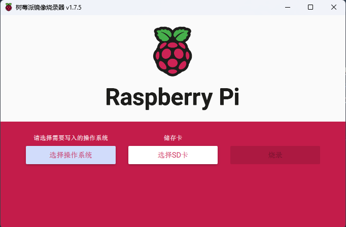
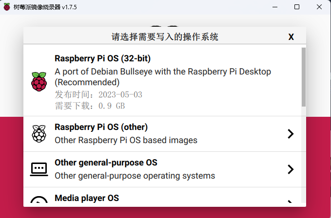
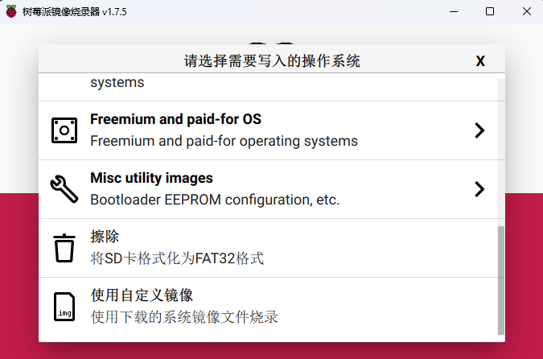
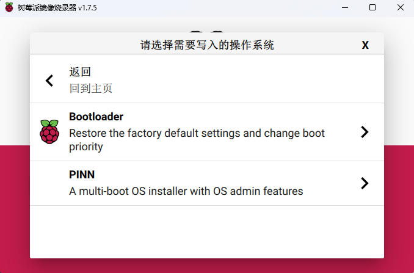
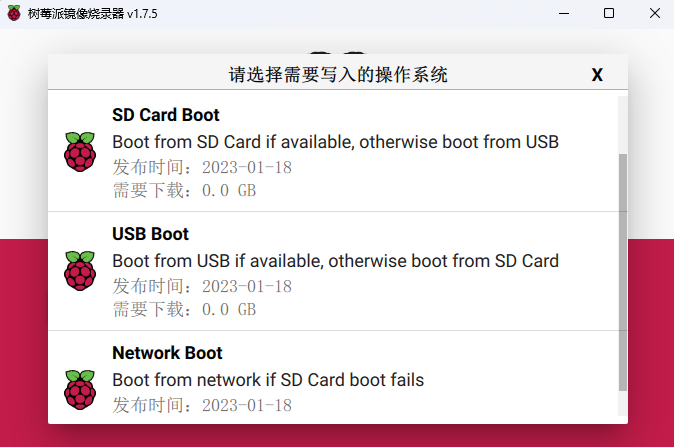
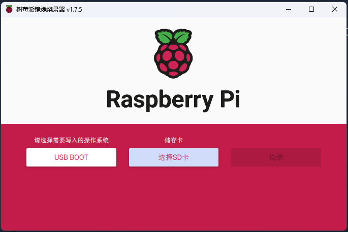

树莓派U盘启动方法
树莓派U盘启动方法
树莓派设备是学习嵌入式Linux开发的常见一款开发板，我们一般是将系统进行烧录到TF卡内，使树莓派从TF卡内启动系统，但是市面上常见的TF卡的IO速度大约是10MB/s，TF卡的读写速度大大限制了一些IO交换比较多的任务的执行速度，使我们的程序运行过程中出现卡顿或者运行缓慢等情况，如果我们能够将树莓派默认的启动方式从TF卡更改到U盘启动，使用USB3.0标准的U盘作为我们的系统盘，这将会大幅提高我们系统运行的流畅性以及程序执行的速度。
下面我会通过树莓派的官方镜像烧录工具来演示如何将树莓派的启动方式切换至U盘启动。
前期准备工作
一张TF卡
用于将原本的Bootloader自动烧录进树莓派的板载存储中以改变与原本的Bootloader
TF卡读卡器
用于将TF卡连接至电脑，便于Raspberrypi镜像烧录工具对其进行操作
一块支持USB3.0标准的U盘
切换后U盘中会烧录进我们的新的系统
Raspberrypi镜像烧录工具
树莓派官方出品的一款极为便捷的树莓派烧录工具，可以一键烧录各种与树莓派相兼容的系统，除了官方的Raspberrypi Pi OS还有很多常见的Linux系统如：Ubuntu Apertis RISC；还有很多小众的特殊用途的系统支持一键烧录，使树莓派的生态更为全面。
我们的Bootloader也在官方镜像下载器的支持范围内。
此软件可以从官网下载，点击此处跳转官方网站选择合适版本下载。

正式开始
将Bootloader烧录进TF卡
将TF卡通过读卡器连接电脑，在Raspberrypi镜像烧录工具中点击选择操作系统

这里可供我们选择的操作系统非常多，各位可以自行探索，我们这里下拉，选择Misc utility images

再次选择Bootloader

Bootloader中提供了三种Boot方式

SD Card Boot方式指优先从SD卡启动，如果无法启动则从USB启动
USB Boot方式则与SD Card Boot 相反
NetWork Boot方式是优先SD卡和USB方式，如果两者都无法启动则会自动通过网络进行启动，但是这一种方式我没有尝试过，有兴趣的小伙伴可以尝试一下。

选择USB Boot，点击选择SD卡，进行烧录等待完成即可。
将Bootloader烧录进树莓派
将烧录好的TF卡插入树莓派，上电启动后绿色的LED会快速闪烁一段时间，之后连接树莓派的屏幕上会显示为绿色，则Bootloader已经烧录进树莓派，大功告成，现在树莓派已经将启动方式切换为优先USB。
重新安装系统或者迁移原系统
重新安装
通过树莓派镜像烧录器选择需要的系统进行少录，将我们的U盘连接电脑，选择SD卡时选择我们的U盘，正常进行烧录即可，最终将U盘插在树莓派上的USB3.0接口上，上电后即可自动启动系统。
迁移系统
迁移系统要注意将我们要迁移的U盘先格式化为FAT32格式，此操作可以借助树莓派镜像烧录器进行。
将原本的TF卡内的所有文件进行拷贝，粘贴到U盘内，最终将U盘插在树莓派上的USB3.0接口上，上电后即可自动启动系统。